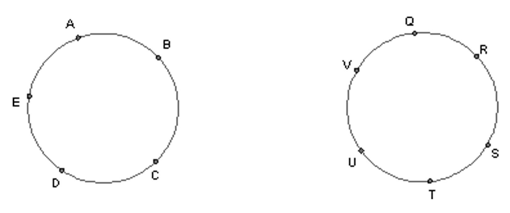
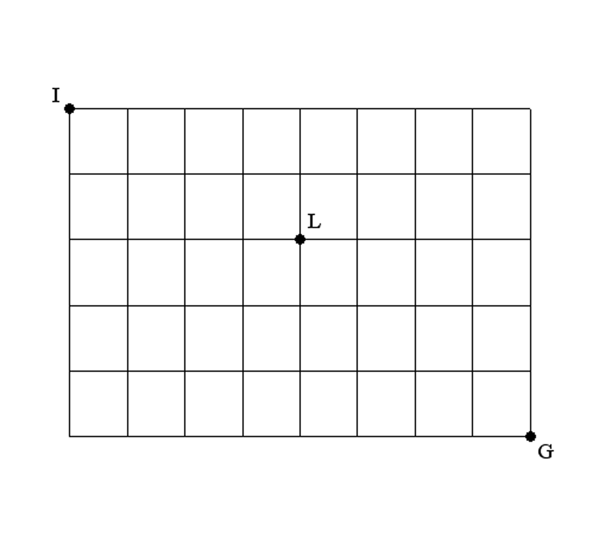

{% raw %}
<article>

  <section class="problems">

    <div class="problem">
      <p class="problem-part">How many colors would it take to color each one of the
      graphs below? Explain your answer for each graph.</p>


    <figure>
      
    </figure>


    <p class="problem-part">What if there were “$n$” nodes on the circle (instead of
    the 5 nodes and 6 nodes in the graphs of part a) — then how
    many colors would it take to color? Answer clearly and
    completely.</p>
    </div>

    <div class="problem">
      <p>Chris draws a graph that has an Euler Circuit. Alonso adds
      an edge to Chris’s graph, and now, although the graph no
      longer has an Euler Circuit, Alonso says it has an Euler
      Path. Can Alonso possibly be right? Explain.<br></p>
    </div>

    <div class="problem">
      <p>From Crisler and Froelich: <em>Discrete Mathematics Through
        Applications</em>.
      The following is a list of chemicals and the chemicals with
      which each cannot be stored.</p>


    <table id="table-1" class=
    "No-Table-Style table-style-override-1">
      <tbody>
        <tr>
          <td class="Basic-cell">
            <p class="Table---Cell-Header">Chemicals</p>
          </td>

          <td class="Basic-cell">
            <p class="Table---Cell-Header">Cannot Be Stored
            With</p>
          </td>
        </tr>

        <tr>
          <td class="Basic-cell">
            <p class="Table---Cell-Text">1</p>
          </td>

          <td class="Basic-cell">
            <p class="Table---Cell-Text">2, 5, 7</p>
          </td>
        </tr>

        <tr>
          <td class="Basic-cell">
            <p class="Table---Cell-Text">2</p>
          </td>

          <td class="Basic-cell">
            <p class="Table---Cell-Text">1, 3, 5</p>
          </td>
        </tr>

        <tr>
          <td class="Basic-cell">
            <p class="Table---Cell-Text">3</p>
          </td>

          <td class="Basic-cell">
            <p class="Table---Cell-Text">2, 4, 5</p>
          </td>
        </tr>

        <tr>
          <td class="Basic-cell">
            <p class="Table---Cell-Text">4</p>
          </td>

          <td class="Basic-cell">
            <p class="Table---Cell-Text">3, 7</p>
          </td>
        </tr>

        <tr>
          <td class="Basic-cell">
            <p class="Table---Cell-Text">5</p>
          </td>

          <td class="Basic-cell">
            <p class="Table---Cell-Text">1, 2, 3, 6, 7</p>
          </td>
        </tr>

        <tr>
          <td class="Basic-cell">
            <p class="Table---Cell-Text">6</p>
          </td>

          <td class="Basic-cell">
            <p class="Table---Cell-Text">5</p>
          </td>
        </tr>

        <tr>
          <td class="Basic-cell">
            <p class="Table---Cell-Text">7</p>
          </td>

          <td class="Basic-cell">
            <p class="Table---Cell-Text">1, 4, 5</p>
          </td>
        </tr>
      </tbody>
    </table>


    <p class="No-Paragraph-Style para-style-override-3"><br></p>

    <p class="problem-part">Draw a graph to represent
    the situation.</p>

    <p class="problem-part">How many different storage
    facilities are necessary to keep all 7 chemicals?</p>
</div>

    <div class="problem">
      <p>Uler says she just drew a graph with 1001 nodes, and
      exactly 500 of the nodes are of even degree. Do you believe
      her? Explain.</p>
    </div>

    <div class="problem">
      <p>How many colors does it take to color a complete graph
      with n nodes? Explain.</p>
    </div>

    <div class="problem">
      <p>A graph has 6 nodes with degrees 3, 3, 4, 5, 3, and 2. Is
      it possible for the graph to have an Euler path?</p>
    </div>

    <div class="problem">
      <p>For each of the following say whether it’s true or false.
      If false, produce a counterexample or say precisely why.</p>

      <p class="problem-part">Sum of degrees of any graph is
      even.</p>

      <p class="problem-part">Every graph has an even number of
      nodes of odd degree.</p>

      <p class="problem-part">If a graph has an Euler path then
      it must have exactly two vertices/nodes of odd degree.</p>

      <p class="problem-part">Every graph of 4 or fewer nodes is
      planar.</p>

      <p class="problem-part">All the nodes of a graph could be
      of odd degree.</p>

      <p class="problem-part">A planar graph could be isomorphic
      to a non-planar graph.</p>

      <p class="problem-part">All complete graphs with four nodes
      are isomorphic to each other.</p>
    </div>

    <div class="problem">
      <p>For some graphs that have Euler circuits, it is actually
      still possible to walk around those graphs in such a way that
      you get stuck before you’ve crossed every edge. Draw one such
      graph, and show (a) how to walk around it so that you cross
      every edge exactly once, and (b) how to walk around it so
      that you get stuck before you get to every edge.<br>
      <br></p>
    </div>

    <div class="problem">
      <p>Simplify $\big(\frac{120x^{-8}y^7}{y^{-2}x^{-4}z^3 \cdot 15}\big)^{-2}$
        making sure there are only
      positive exponents in your simplified answer.</p>
    </div>

    <div class="problem">
      <p>Write the fraction in as simplified a form as possible,
      without using a calculator:<br>
  	  $\big(\frac{105/117}{165/363}\big)^{-3}$
      </p>
    </div>

    <div class="problem">
      <p>If $x$ and $y$ are &gt; 0, express
      $\frac{{{x^y}{y^x}}}{{{y^y}{x^x}}}$ , using only a single
      exponent.</p>
    </div>

    <div class="problem">
      <p>Find the prime factorization of 533610. Use a calculator
      to help! Now, find the prime factorization of 20! (20
      factorial), without a calculator.</p>
    </div>

    <div class="problem">
      <p>How many of the first 200 positive
      integers are divisible by all of the
      numbers 2, 3, 4 and 5?</p>
    </div>

    <div class="problem">
      <p>Suppose $p$ and $q$ are prime numbers.</p>

      <p class="problem-part">What are all the factors of the
      number $pq$ ?</p>

      <p class="problem-part">List all the factors of ${p^{10}}$
      .</p>

      <p class="problem-part">How about ${p^2}{q^2}$ ?</p>
    </div>

    <div class="problem">
      <p>Write each of the following numbers in the form
      ${2^a}{3^b}{5^c}{7^d}$ , where $a$, $b$, $c$, $d$ can be whatever you
      want.</p>

      <p class="problem-part">2100</p>

      <p class="problem-part">$\frac{1}{{21}}$</p>

      <p class="problem-part">2</p>

      <p class="problem-part">1</p>

      <p class="problem-part">2.1</p>
    </div>

    <div class="problem">
      <p>Write the GCD of ${2^a}{3^b}{5^c}{7^d}$ and ${2^{a +
      1}}{3^{b - 2}}{5^{c + 4}}{7^d}$ , assuming that $a$, $b$, $c$, $d$
      have to be integers larger than 1.</p>
    </div>

    <div class="problem">
      <p>Is $\frac{{50^{24}}}{{20^{12}}}$ , simplified,
      an integer or a<br>
      fraction? Explain.</p>
    </div>

    <div class="problem">
      <p>Simplify the following expressions, and make sure there
      are no negative exponents:</p>

      <p class="problem-part">$\frac{{36{{(x{y^4})}^{ -
      2}}}}{{40{x^5}{y^{10}}}}$

      <p class="problem-part">
      $\big( \frac{(x^2y^{-3})^2}{x^{-2}y^5} \big)^{ - 1}$
      </p>

      <p class="problem-part">.
      $\big(\frac{16^{-4}x^{-4}y^{-2}}{128^{-2}x^{-3}y^{-3}}\big)^3$</p>
      </div>

    <div class="problem">
      <p>If $m \ne 0$ , then $\frac{{{{({m^4})}^4}}}{{{m^4}}} = $
      …?</p>
    </div>

    <div class="problem">
      <p>If ${4^{6x - 9}} = 64$ then what is the value<br>
      of $x$?</p>
    </div>

    <div class="problem">
      <p>You ask your friend to do the following calculations:</p>

      <p class="problem-part">Take a number</p>

      <p class="problem-part">Add 1</p>

      <p class="problem-part">Multiply by 3</p>

      <p class="problem-part">Multiply your answer in (c) by one
      less than the original number …</p>


    <p class="Problems---Problem-flow">When your friend tells you
    the answer in d, what’s the fastest process you can use to
    figure out what the original number was?</p>
	</div>

    <div class="problem">
      <p>Another number trick:</p>

      <p class="problem-part">Pick a number.</p>

      <p class="problem-part">Double your number.</p>

      <p class="problem-part">Square the result in “b”</p>

      <p class="problem-part">Subtract 4. Call this answer
      “Fred.”</p>

      <p class="problem-part">Now take your original number and
      add one.</p>

      <p class="problem-part">Multiply this number by one less
      than the original number. This is “Lilli”.</p>

      <p class="problem-part">What
      is $\frac{\rm{Fred}}{\rm{Lilli}}$ ? Why does this
      work?<br></p>
    </div>

    <div class="problem">
    <p>You ask your friend to think of a number, then</p>


    <p class="Problems---Problem-flow">• Multiply by 6</p>

    <p class="Problems---Problem-flow">• Add 9</p>

    <p class="Problems---Problem-flow">• Divide by 3</p>

    <p class="Problems---Problem-flow">• Subtract 3.</p>

    <p>Your friend tells you the answer. What do you need to do to
    get the original number back so that you can convince your
    friend you are a mind-reader? Show some algebra to explain
    why.</p>

    </div>

    <div class="problem">
      <p>Which equation represents the following statement?<br>
      Twice the difference between a certain number and its square
      root is 15 more than twice the number.</p>

      <p class="problem-part">$2N - \sqrt{N} = 15 + N$</p>

      <p class="problem-part">$2\left( {N - \sqrt N } \right) =
      15 + 2N$</p>

      <p class="problem-part">$2N - \sqrt N = 16 + N$ )</p>

      <p class="problem-part">$2N - \sqrt N + 15 = N$</p>

      <p class="problem-part">$2\left( {N - \sqrt N } \right) +
      15 = N$</p>

      <p class="problem-part">$2N - 2\sqrt N = 15 + 2N$<br>
      </p>
    </div>

    <div class="problem">
      <p>Simplify the following so that there are only positive
      exponents: $\big(\frac{168p^{-4}q^5r^{-6}}{42pq^{-2}r^3}\big)^{-2}$</p>
    </div>

    <div class="problem">
      <p>Simplify this until it is a single fraction that is
      reduced as much as is possible: <br>
      $\big(\frac{180 \cdot 5}{4 \cdot 196}\big) \cdot \big(\frac
{448 \cdot 49}{1800 \cdot 15}\big)^2$
      </p>
    </div>

    <div class="problem">
      <p>Simplify by multiplying out and collecting like terms.<br>
      (By the way, these specific expressions tend to show up very
      often in algebra.)</p>

      <p class="problem-part">${(x + y)^2}$</p>

      <p class="problem-part">${(x - y)^2}$</p>

      <p class="problem-part">$(x + y)(x - y)$</p>

      <p class="problem-part">$(1 + x)(1 - x)$</p>

      <p class="problem-part">$(x + 1)(x - 1)$</p>
    </div>

    <div class="problem">
      <p>Simplify by multiplying out and collecting like terms:</p>

      <p class="problem-part">$4b(b - 9) - b(2 - b)$</p>

      <p class="problem-part">$({z^2}y + {z^2} - x)(z - x)$</p>

      <p class="problem-part">$(m + n)({m^2} - {n^2})$</p>

      <p class="problem-part">$-5x(x+3y)^2$</p>

      <p class="problem-part">$(5t + 2)(25{t^2} - 10t + 4)$</p>

      <p class="problem-part">${({z^4} - 3)^2}$</p>

      <p class="problem-part">$(2a{b^2} - 5{a^2}b)(21{a^5}{b^4} -
      14{a^4}{b^5} + 7a{b^3} - b)$</p>

      <p class="problem-part">${(2a + 3b)^3}$</p>

      <p class="problem-part">$1 - (1 + [1 - (1 + y)])$</p>
    </div>

    <div class="problem">
      <p>If ${x^2} + 7x + 8 = (x + 3)(x + 4) + p$ is always true,
      then $p = $ …</p>
    </div>

    <div class="problem">
      <p>Reduce each fraction as much as you can (which may be not
      at all).</p>

      <p class="problem-part">$\frac{{14{a^2} -
      18a}}{{2a}}$</p>

      <p class="problem-part">$\frac{{{x^2}y -
      {x^7}{y^2}}}{{{x^2}y}}$</p>

      <p class="problem-part">$\frac{{ - 12m(m - 13)}}{3}$</p>

      <p class="problem-part">$\frac{{4x + 2y - 3}}{2}$</p>

      <p class="problem-part">$\frac{{8{x^3}{y^5} -
      6{x^4}{y^3}}}{{{x^2}{y^3}}}$</p>

      <p class="problem-part">$\frac{{24{r^3}{s^{ - 2}} - 36{r^{
      - 1}}{s^5}}}{{{r^{ - 2}}{s^{ - 3}}}}$</p>

      <p class="problem-part">.
      $\frac{{6{x^3} -
      12x{y^{\frac{2}{3}}}}}{{{x^{\frac{1}{2}}}y}}$</p>

      <p class="problem-part">$\frac{{6{f^4}g -
      5{f^2}{g^3}}}{{fg}}$</p>

      <p class="problem-part">$\frac{{\left( {\frac{{2x + 2}}{x}}
      \right)}}{{\left( {\frac{x}{{x + 1}}} \right)}}$</p>

      <p class="problem-part">$\frac{{{{({n^2} - 6n +
      14)}^6}}}{{{{({n^2} - 6n + 14)}^4}}}$ </p>

    </div>

    <div class="problem">
      <p>Add the fractions:</p>

      <p class="problem-part">$\frac{8}{p} + \frac{q}{2}$</p>

      <p class="problem-part">$\frac{1}{x} +
      \frac{3}{{{x^2}}}$</p>

      <p class="problem-part">$\frac{{2y + 3}}{6} - \frac{{y +
      3}}{4}$</p>

      <p class="problem-part">$\frac{3}{{ab}} -
      \frac{4}{{{b^2}}}$</p>

      <p class="problem-part">$\frac{4}{{2x - 1}} -
      \frac{3}{{2x}}$</p>

      <p class="problem-part">$\frac{2}{{x - 1}} + \frac{2}{{x +
      1}}$</p>

      <p class="problem-part">$\frac{{{w^2} + 2w + 1}}{w} -
      \frac{{{{(w - 1)}^2}}}{w}$</p>
    </div>

    <div class="problem">
      <p>What is the result when $3 - 2x$ is subtracted from the
      sum of $x - 3$ and $5 - x$ ?<br>
        <font size = "2">(From Andres <em>et al</em>, <em> Preparing for the SAT Mathematics.</em> Amsco, 2005.)</font> </p>
    </div>

    <div class="problem">
      <p>If $3x - 7 = 5$ , then $9x - 21$ =…?</p>
    </div>

    <div class="problem">
      <p>If ${x^2} + {y^2} = 37$ and $xy = 24$ , what is the value
      of ${(x - y)^2}$ ?</p>
    </div>

    <div class="problem">
      <p>Prove that if one positive integer is 3 more than another,
      the difference in
      their squares must be a multiple of 3,
      but cannot be a multiple of 6.</p>
    </div>

    <div class="problem">
      <p>Write each in the form ${a^b}$ , where $a$ and $b$ are
      integers not equal to 1:</p>

      <p class="problem-part">${3^4}{9^5}{27^6}$ </p>

      <p class="problem-part">$4^5 15^{10}$</p>
    </div>

    <div class="problem">
      <p>How many ${2^3}$ terms are there on the left side of the
      equation?</p>
    </div>

    <div class="problem">
      <p>Solve for $x$:</p>

      <p class="problem-part">$3{x^5} = 96$ </p>


    <p class="problem-part">$\frac{2}{3} \; x^3 = 22$ </p>

    <p class="problem-part">${x^{\frac{4}{5}}} = 37$</p>

    <p class="problem-part">$6{x^{- \frac{{1}}{6}}} = 66$</p>

    <p class="problem-part">$217{p^{\frac{2}{9}}} = 53$</p>

    <p class="problem-part">
    $5\sqrt {5x - 1} = 7\sqrt {2x + 5} $</p>

    <p class="problem-part">$\sqrt{3x+3} = x + \frac{3}{2}$
    </p>
</div>

<div class="problem">
   <p>Rewrite in the form ${a^b}{c^d}$ , where $a$, $b$, $c$, and $d$
   are each integers not equal to 1 and less than 10:<br>

   $27^{\frac{4}{3}} \cdot 216^{\frac{2}{3}} \cdot 32^{\frac{3}{5}}$</p>
 </div>

 <div class="problem">
    <p>Simplify the following expressions, making sure there are
      no negative exponents:</p>


    <p class="problem-part">$\frac{{{x^{ - \frac{2}{3}}}}}{{{x^{\frac{4}{3}}}}}$</p>

    <p class="problem-part">$\frac{{{x^2}{y^{\frac{1}{4}}}}}{{{y^{ -
    \frac{1}{2}}}{x^{\frac{5}{3}}}}}$</p>

    <p class="problem-part">$\big(\frac{16^{\frac{3}{4}} x^\frac{4}{3} y^{-2}} {121^{-\frac{1}{2}} x^{-\frac{2}{3}} y^{-3}}\big) ^3$</p>
</div>

    <div class="problem">
      <p>How many distinguishable 6 letter words can be formed from
      the letters of “twists”, where each letter can only be used
      once per word? What if the t’s and s’s were given different
      colors, so they could be distinguished from each other as
      well?</p>
    </div>

    <div class="problem">
      <p>How many ways can you step right 4 times and left 7 times
      in a sequence of 11 steps? Put another way, how many ways can
      you arrange 4 R’s and 7 L’s in a straight line, where the R’s
      and L’s are indistinguishable from each other?</p>
    </div>

    <div class="problem">
      <p>Suppose you’re going to toss a coin 8 times and record the
      sequence of heads and tails. How many different sequences are
      possible?</p>
    </div>

    <div class="problem">
      <p>Josephine flips a coin 9 times. What is the probability
      that she’ll get exactly 6 heads? 4 heads? 3 heads?</p>
    </div>

    <div class="problem">
      <p>How many ways are there to form a committee of 5 people
      from a class of 80? (There are at least two different methods
      to solve this problem)</p>
    </div>

    <div class="problem">
      <p>In going packing for a trip, you and your spouse need to
      pack 4 ties and 6 dresses. You own 7 ties and 10 dresses. How
      many different ways can you select the ties and dresses for
      your trip?</p>
    </div>

    <div class="problem">
      <p>How many ways can you select 4 letters from the word
      “fishbowled”, if the order of the letters selected is
      unimportant? What if the order is important?</p>
    </div>

    <div class="problem">
      <p>If you start in the lower left corner of an 8x8 chess
      board, and for each “step” you can move either one square to
      the right or one square up, how many different ways are there
      to reach the upper right corner of the board?</p>
    </div>

    <div class="problem">
      <p>In how many ways can five girls be chosen from a class of
      20 if Sarah Dreadful has to be chosen (so that she won’t
      throw a fit)?</p>
    </div>

    <div class="problem">
      <p>Julius goes to a yard sale and sees 8 books on sale. He
      thinks that he would like to buy either 2, 3, or 4 books. How
      many different possibilities are there for what books he
      could buy at the yard sale?</p>
    </div>

    <div class="problem">
      <p>Ten people meet at a party, and each pair of people shake
      hands. How many handshakes are there?</p>
    </div>

    <div class="problem">
      <p>Three identical prizes are to be given to three lucky
      people in a crowd of 100. In how many ways can this be done?
      What if the prizes were not identical?</p>
    </div>

    <div class="problem">
      <p>You plan on forming a Sophomore Prom committee consisting
      of 8 sophomores. The Sophomore Class has 45 boys and 35 girls
      in it. How many distinct committees can be formed if</p>

      <p class="problem-part">there are no restrictions placed on
      the committee other than there must be 8 sophomores on the
      committee?</p>

      <p class="problem-part">there are to be 4 girls and 4 boys
      on the committee?</p>

      <p class="problem-part">the committee cannot have Sarah
      Dreadful on it?</p>
    </div>

    <div class="problem">
      <p>A boat has 3 red, 3 blue, and 2 yellow flags with which to
      signal other boats. All 8 flags are flown in various
      sequences (1 flag at a time) to denote different messages.
      How many such sequences are possible?</p>
    </div>

    <div class="problem">
      <p>Five boys and five girls stand in a line. How many
      different arrangements are<br>
      possible:</p>

      <p class="problem-part">If boys and girls can be intermixed
      (or not) in the line?</p>

      <p class="problem-part">If all the boys stand at the back
      of the line?</p>
    </div>

    <div class="problem">
      <p>Henry’s Hamburger Heaven offers its hamburgers with the
      following condiments: ketchup, mustard, mayonnaise, tomato,
      lettuce, pickles, cheese, and onions. A customer can choose
      one, two, or three meat patties, and any collection of
      condiments. How many different kinds of hamburgers can be
      ordered?</p>
    </div>

    <div class="problem">
      <p>A “necklace” is a circular string with several beads on
      it. Two necklaces are the same if they are just rotations, in
      the plane, of each other. How many different necklaces can be
      made with 10 different beads?</p>
    </div>

    <div class="problem">
      <p>How many 6-digit numbers have at least one even digit?</p>
    </div>

    <div class="problem">
      <p>There are five books on a shelf. How many ways are there
      to arrange some or all of them in a stack? The stack may
      consist of one book.</p>
    </div>

    <div class="problem">
      <p>The map of a town is depicted below. Ian lives at point I;
      the library is at point L; and the grocery store is at point
      G. Ian can only walk south or east. The town is many times
      bigger than the map.</p>


    <figure>
      
    </figure>

    <p class="problem-part">How many different ways are there for
    Ian to walk from his house to the library?</p>

    <p class="problem-part">How many different ways are there for
    Ian to walk from the library to the grocery store?</p>

    <p class="problem-part">If Ian wants to walk from his house
    to the grocery store by way of the library, how many different
    ways can he do this?</p>

    <p class="problem-part">Suppose Ian uses a coin flip to
    decide whether he’s going to go one block south or one block
    east. After he walks a block, he then tosses the coin again and
    follows the previous guidelines regarding his movement. If it
    takes Ian one minute to walk one block, then what is the
    probability that he will make it from his house to the grocery
    store in 13 minutes? Assume it takes him no time to flip the
    coin and interpret the meaning of the outcome.</p>

	</div>

    <div class="problem">
      <p>One student has 6 novels and another has 7 novels. How
      many ways are there for the first student to exchange 3
      novels with 3 novels owned by the second student?</p>
    </div>

    <div class="problem">
      <p>How many 5 digit numbers have factors of 4 or 5?</p>
    </div>

    <div class="problem">
      <p>The equation below shows a series of 1’s summing to
      14.</p>


    <p class="Problems---Problem-flow para-style-override-9">$1 + 1
    + 1 + 1 + 1 + 1 + 1 + 1 + 1 + 1 + 1 + 1 + 1 + 1 = 14$</p>

    <p class="problem-part">How many ways can you choose 3 of the
    plus signs to circle?</p>

    <p class="problem-part">Clearly explain how your answer to
    Part a also answers the question below.</p>

    <p class="problem-part">How
    many solutions are there of the equation $x + y + z + w = 14$
    in positive integers? Note: the solution $\left( {1,2,8,3}
    \right)$ is different from the solution $\left( {2,3,1,8}
    \right)$.</p>

    </div>

    <div class="problem">
      <p>What is the probability of getting 5 heads out of 10
      tosses of a fair coin?</p>
    </div>

    <div class="problem">
      <p>Suppose you draw at random 5 cards from a standard 52-card
      deck.</p>

      <p class="problem-part">How many possible different 5-card
      hands are there?</p>

      <p class="problem-part">How many ways can you pull 5 cards
      such that you get exactly one ace?</p>

      <p class="problem-part">How many ways can you pull 5 cards
      such that you get exactly two aces?</p>

      <p class="problem-part">How many ways can you pull 5 cards
      such that you get exactly two aces and three kings?</p>

      <p class="problem-part">What’s the probability of pulling
      4-of-a-kind?<br></p>
    </div>

    <div class="problem">
      <p>Suppose you are standing at zero on the real number line.
      You toss a fair coin and move 1 unit to the left if you get
      heads. You move one unit to the right if you get tails. You
      do this 17 more times for a total of 18 coin tosses.</p>

      <p class="problem-part">After 18 tosses what are the
      possible numbers you might be at on the real number line?</p>

      <p class="problem-part">What is the probability that you
      will be standing at 0 after 18 tosses? At -2? at -3?</p>
    </div>

    <div class="problem">
      <p>For fun on a Friday night you and a friend are going to
      flip a fair coin 10 times. Let H represent the outcome that a
      flip shows heads and T represent tails. Assume that
      ${\rm{Prob}}\left( {\rm{H}} \right) = {\rm{Prob}}\left(
      {\rm{T}} \right) = 0.5$ .</p>

      <p class="problem-part">You flip the coin 10 times and get
      the sequence HTHHHTTHHT. Your friend does likewise and gets
      HHHHHHHTTT. Which of these two sequences was more likely to
      occur? Justify your response.</p>

      <p class="problem-part">What is the probability that you
      will get at least two heads in 10 tosses of the coin?</p>
    </div>

    <div class="problem">
      <p>The numbers 1, 2, 3, …, 25 are placed in random order.
      What’s the probability that the numbers 1, 2, 3 are next to
      each other?</p>
    </div>

    <div class="problem">
      <p>a. Suppose that 14 people are arranged randomly in a line
      and two of these people are Emma and Eric. What’s the
      probability that there are 3 people standing between Emma and
      Eric?</p>

      <p class="problem-part">Suppose that the 14 people in Part
      a are arranged in a circle. What’s the probability that there
      are 3 people standing between Emma and Eric?</p>
    </div>

    <div class="problem">
      <p>Suppose you will roll a standard, fair six-sided die until
      you get a 2. What’s the probability that you will stop
      rolling after the first roll? What’s the probability that you
      will stop after the second roll? What’s the probability that
      you will stop after n rolls?</p>
    </div>

    <div class="problem">
      <p>Eight first graders, 4 girls and 4 boys, arrange
      themselves at random around a merry-go-round. What is the
      probability that boys and girls will be seated
      alternately?</p>
    </div>

    <div class="problem">
      <p>Rick writes letters to 8 different people and addresses 8
      envelopes with the people’s addresses. He randomly puts the
      letters in the envelopes. What is the probability that he
      gets exactly 6 letters in the correct envelopes? What about 7
      letters?</p>
    </div>

    <div class="problem">
      <p>There are 40 people waiting to be selected for a 12-person
      jury. Of the forty, 20 are African-American, 15 are Hispanic,
      and 5 are Caucasian.</p>

      <p class="problem-part">How many different 12-person juries
      (called “jury panels”) can be picked from this group of 40?
      Show your work.</p>

      <p class="problem-part">How many jury panels can be picked
      that have only African-Americans? Show your work.</p>

      <p class="problem-part">Show that the probability that an
      all African-American panel would be picked just by chance is
      approximately .0000225. Show your work.</p>

      <p class="problem-part">If you were a judge and the two
      lawyers working a case in your court picked an all
      African-American jury panel (or a jury panel with no African
      Americans on it) from the pool of 40 given in the beginning
      of this problem, would you believe that this panel was
      created without consideration of race? Explain, making direct
      reference to the probability in Part c.</p>
    </div>

    <div class="problem">
      <p>Suppose Tony’s class is trying to form two committees —
      the Social Committee and the Fund Raising Committee — from
      the fourteen students in his class. How many possible
      arrangements are there of the fourteen students into these
      two committees, if each student is allowed to choose one
      committee or neither to be on? Show your work.</p>
    </div>
  </section>

</article>

{% endraw %}
